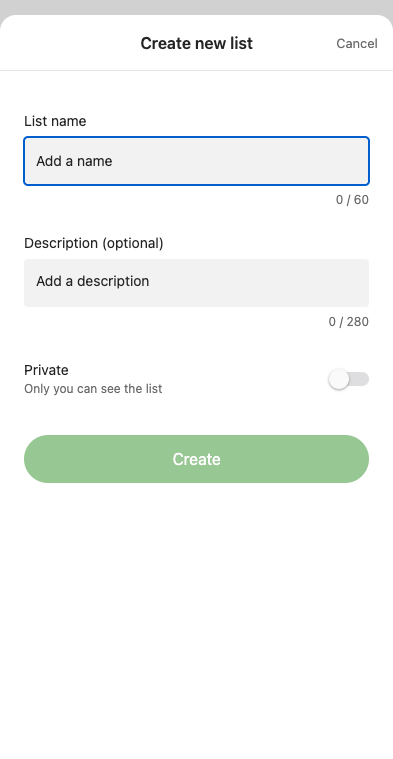
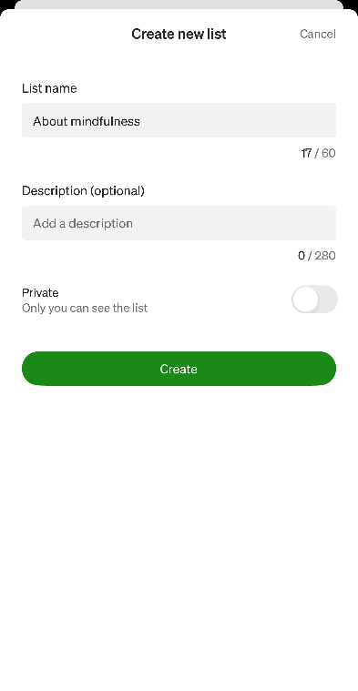
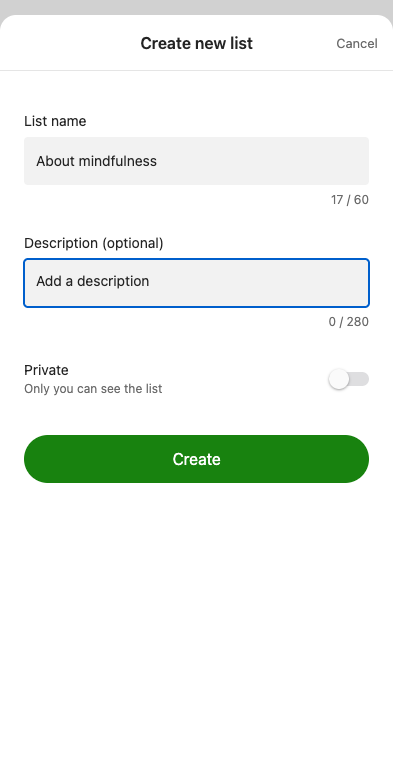
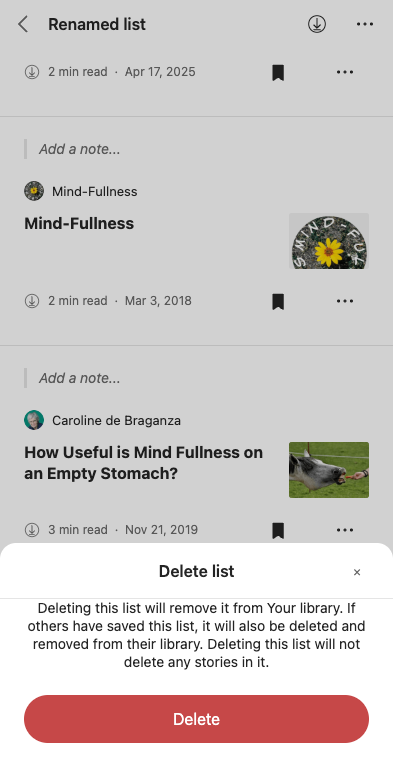

Reference: 1179×2556 normalized to393×852, OS top59/bottom34 cropped. Implementation: actual393×759 browser capture. Cropping does not establish device DPR. List membership/count/profile are actual mock state; differing content and scroll positions are documented. Font, icons, inaccessible source content and mock menu behavior remain different; no100%claim.
Library / 02_sc_84e0421de98041bbb014822fc05dd3fb
Library / 03_sc_57450c38bf994be18d95fcaf712c56ba


Library/Creating a list / 02_sc_675e3eda08504708979533659dacdcf6

Library/Creating a list / 03_sc_ca3b32e4373a40fc84405838671eab27


Library/List detail / 02_sc_967232cfb5f845839053e0d371d78911
Library/List detail / 03_sc_0b1e7b64b9f14f2cb5358161e0f67a94

Library/List detail/Deleting a list / 02_sc_71f31ac7803a47f89b2e76b6a9355a7c

Library/List detail/Deleting a list / 03_sc_a1562b1931fc4650a544861094934588

Library/List detail/Removing a story / 01_sc_fa4e79f0bed747d698ae44e23f9223f9